数据的表示
二进制的表示
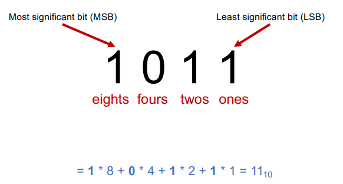
无符号整数（Unsigned）
如果一个数据表示的位数为w，则可以表示的无符号数据大小范围是[0, 2^w - 1]。下图展示了一个4位比特所能表示的数据范围：
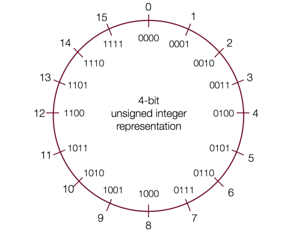
有符号整数（signed）
有符号数据可以表示正数、负数以及0，比特位的最高位表示符号位，若为1则表示负数，若为0则表示非负数。其表示如下图所示：
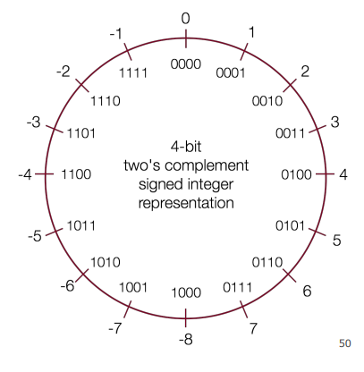
为什么负数的表示形式是这样的？
首先我们需要知道， -8 + 8 = 0 是大家认可的。大家可以观察下图，可以看到负数的二进制表示是其对应正数的二进制位取反，再加1获得。我们也称有符号数据的表示为补码。
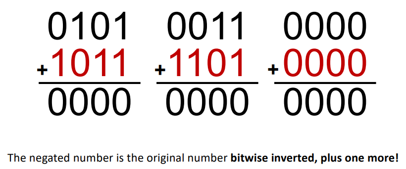
数据溢出（overflow）
如果数据超出比特位所能表示的最大值，则会溢出变为所能表示的最小值。
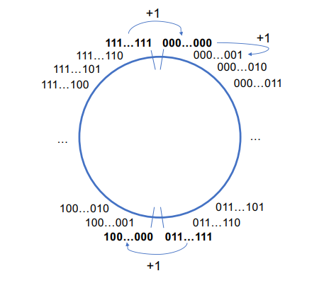
- example
#include <stdio.h>
#include <limits.h>
int main(){
// 观察不同数据类型的溢出后的表现
unsigned int a1 = 0xffffffff;
int a2 = 0x7fffffff;
int a3 = 0x80000000;
// limits.h
printf("signed int表示最大数值为: %d\n", INT_MAX);
printf("signed int表示最小数值为: %d\n", INT_MIN);
printf("unsigned int overflow: %d\n", a1 + 1); // 0
printf("signed int overflow: %d\n", a2 + 1); // INT_MIN
printf("int underflow: %d\n", a3 - 1); // INT_MAX
unsigned short s1 = 0xffff;
short s2 = 0x7fff;
short s3 = 0x8000;
printf("short 表示最大数值为: %hd\n", SHRT_MAX);
printf("short 表示最小数值为: %hd\n", SHRT_MIN);
printf("unsigned short overflow: %hu\n", s1 + 1); // 0
printf("short overflow: %hd\n", s2 + 1); // SHRT_MIN
printf("short underflow: %hd\n",s3 - 1); // SHRT_MAX
unsigned char c1 = 0xff;
char c2 = 0x7f;
char c3 = 0x80;
printf("char 表示最大数值为: %hhd\n", SCHAR_MAX);
printf("char 表示最小数值为: %hhd\n", SCHAR_MIN);
printf("unsigned char overflow: %hhu\n", c1 + 1); // 0
printf("char overflow: %hhd\n", c2 + 1); // -128
printf("char underflow: %hhd\n", c3 - 1); // 127
return 0;
}
/*
signed int表示最大数值为: 2147483647
signed int表示最小数值为: -2147483648
unsigned int overflow: 0
signed int overflow: -2147483648
int underflow: 2147483647
short 表示最大数值为: 32767
short 表示最小数值为: -32768
unsigned short overflow: 0
short overflow: -32768
short underflow: 32767
char 表示最大数值为: 127
char 表示最小数值为: -128
unsigned char overflow: 0
char overflow: -128
char underflow: 127
*/
位操作
与、或、异或、取反位操作
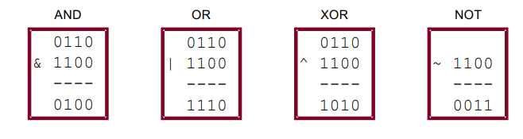
移位操作
- 左移操作，右侧比特位填充0
- 右移操作
- 逻辑右移，左侧高位填充0
- 算术右移，左侧高位填充符号位
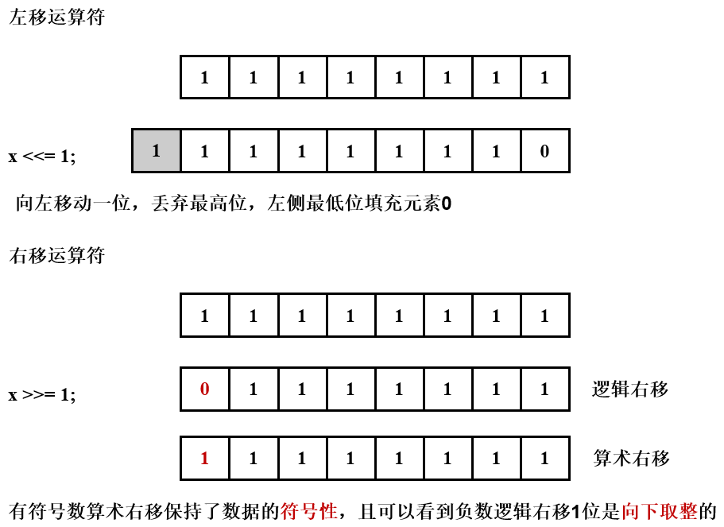
数据类型的隐式转换
-
C语言中针对同一数据类型的无符号数和有符号数进行大小比较时，会隐式转换为无符号数进行比较
-
从小数据类型转换为大数据类型
- unsigned类型添加前导0
-
signed类型添加符号位，符号位为1则添加前导1，符号位为0则添加前导0
-
example
#include <stdio.h>
int main(int argc, char* argv[]){
short s1 = 4;
short s2 = -4;
int i1 = s1;
int i2 = s2;
printf("%d\n", i1);
printf("%d\n", i2);
return 0;
}
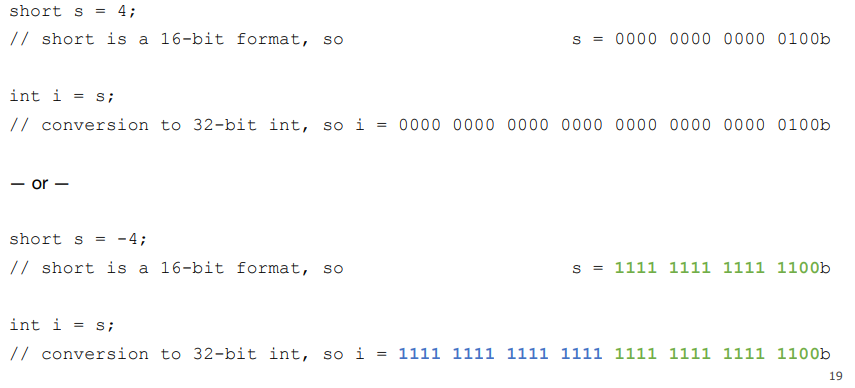
- 从大数据类型裁剪(truncate)为小数据类型，抛弃超出的高比特位
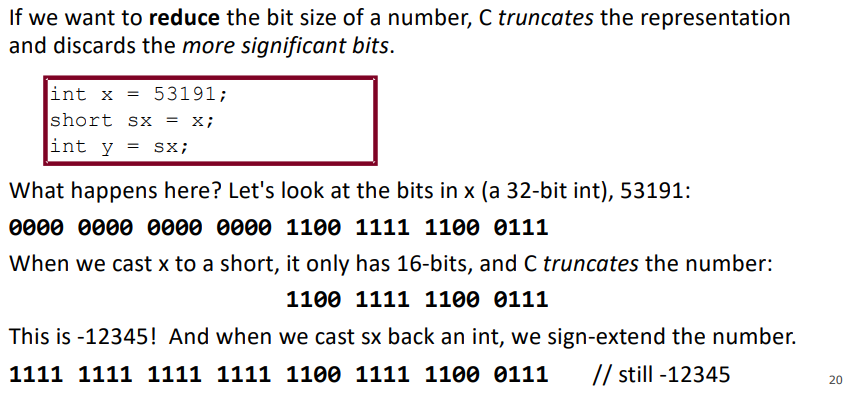
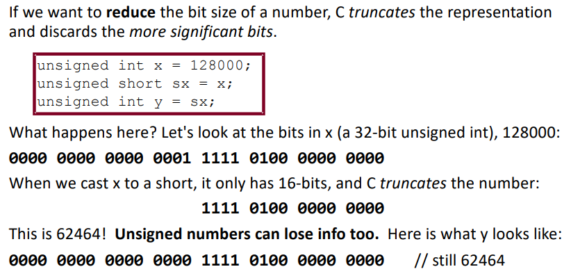
- example
#include <stdio.h>
int main(int argc, char* argv[]){
int x = 53191;
short sx = x;
int y = sx;
// x(4 bytes) binary 0000 0000 0000 0000 1100 1111 1100 0111
printf("x = %d\n", x); // 53191
// sx(2 bytes) binary 1100 1111 1100 0111
printf("sx = %hd\n", sx); // -12345
// 符号位扩展，前导元素为 1
// y(4 bytes) binary 1111 1111 1111 1111 1100 1111 1100 0111
printf("y = %d\n", y); // -12345
return 0;
}
浮点数的表示
计算机中浮点数主要是用于近似实际中的有理数，它无法精确表示所有数值。1985年IEEE指定了IEEE Standard 754 标准，统一了以往不同的浮点数表示形式。
分数二进制（Fractional Binary Numbers）
分数二进制主要分为两部分，左边的二进制表示整数部分，右边的二进制表示小数部分，如下图所示。
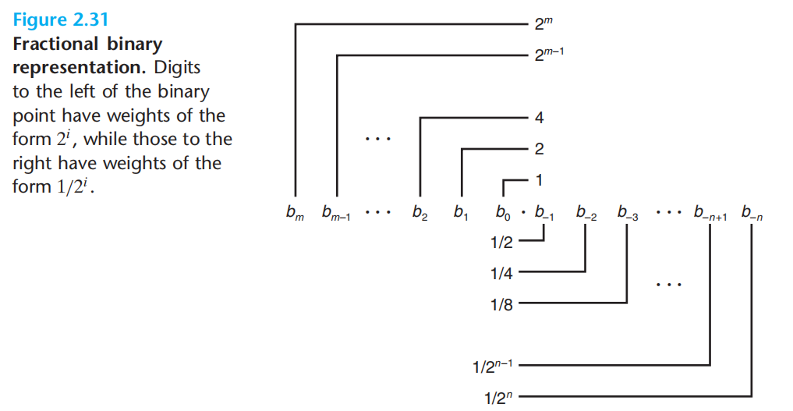
IEEE Floating-Point Representation
浮点数的比特位表示被划分为三个字段： * 符号位 * k位的指数字段 * n位的小数字段
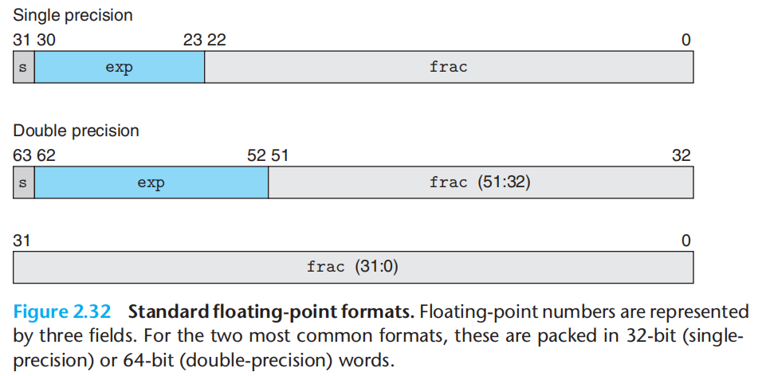
浮点数表示存在两种情况：
- Case 1: Normalized Values
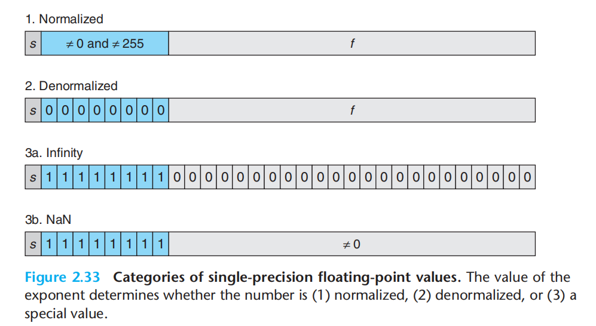
-
Case 2: Denormalized Values
-
Case 3: Special Values